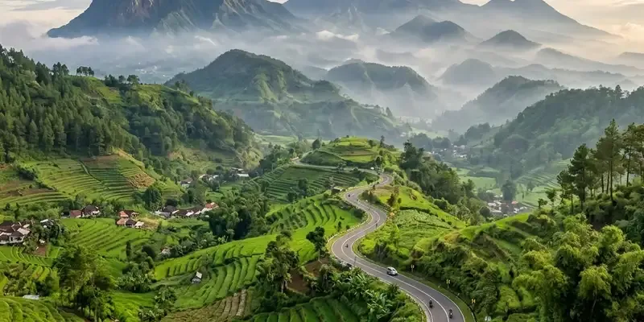

Wahana Malang Dreamland mencakup seluncuran pelangi, ATV, skuter listrik, dan spot foto tematik yang dirancang untuk pengunjung dari berbagai usia.
Ringkasan Inti
- Wahana andalan Malang Dreamland adalah seluncuran pelangi berskala cukup panjang.
- Tersedia wahana kendaraan seperti ATV dan mini trail bagi pencari adrenalin ringan.
- Skuter listrik dan sepeda listrik disediakan untuk berkeliling area sambil menikmati spot foto.
- Terdapat area playground yang lebih ramah untuk anak-anak.
- Fasilitas cafe dan food court melengkapi pengalaman berwisata di kawasan ini.
Apa Saja Wahana Utama yang Ada di Malang Dreamland?
Malang Dreamland memiliki beberapa wahana utama, yaitu seluncuran pelangi, ATV, mini trail, skuter listrik, dan sejumlah spot foto tematik.
Seluncuran pelangi atau rainbow slide menjadi salah satu wahana yang paling banyak diminati pengunjung karena menyajikan sensasi meluncur di lintasan berwarna-warni dengan latar perbukitan hijau.
Bagi pengunjung yang ingin menguji ketangkasan berkendara, wahana ATV dan mini trail disediakan dengan rute khusus yang relatif aman untuk pemula maupun keluarga. Sementara bagi yang ingin berkeliling dengan lebih santai, skuter listrik dan sepeda listrik menjadi pilihan populer untuk berpindah antar area foto.
Untuk wisatawan keluarga yang membawa anak-anak, area playground luar ruangan menyediakan beragam sarana permainan anak yang aman. Selain itu, fasilitas cafe dan area kuliner hadir bagi pengunjung yang ingin beristirahat setelah menikmati berbagai wahana.
Untuk wahana yang menggunakan kendaraan bermotor seperti ATV, sebaiknya orang tua memastikan terlebih dahulu batasan usia dan syarat keselamatan yang berlaku, karena wahana ini umumnya lebih diperuntukkan bagi remaja ke atas.
Apa Wahana Andalan di Malang Dreamland?
Wahana andalan Malang Dreamland adalah seluncuran pelangi yang diklaim sebagai salah satu seluncuran terpanjang di kawasan Jawa Timur.
Wahana ini menjadi daya tarik utama karena kombinasi panjang lintasan, desain warna-warni, serta latar pemandangan perbukitan yang membuatnya populer di media sosial. Selain nilai hiburannya, wahana ini juga sering dijadikan spot dokumentasi favorit oleh pengunjung yang datang bersama keluarga atau rombongan teman.
Selain seluncuran pelangi, wahana unik lain yang cukup jarang ditemui di destinasi wisata lain di sekitarnya turut menjadi nilai tambah tersendiri bagi Malang Dreamland dibandingkan destinasi sejenis di Malang.

Ragam wahana rekreasi seru dan spot foto estetik berlatar panorama alam di Malang Dreamland.
Aktivitas Apa yang Bisa Dilakukan Selain Bermain Wahana?
Selain menikmati wahana, pengunjung dapat bersantai di cafe, berfoto di berbagai spot instagramable, atau menikmati suasana perbukitan sambil menunggang kuda di area yang disediakan.
Kawasan cafe di Malang Dreamland dirancang dengan konsep yang nyaman dan menawarkan pemandangan alam, sehingga cocok dijadikan tempat beristirahat setelah mencoba berbagai wahana. Bagi yang menyukai fotografi, banyak titik di kawasan ini yang sengaja dibuat estetik sebagai latar foto, mulai dari gazebo, taman, hingga area dengan pemandangan langit terbuka.
Aktivitas menunggang kuda juga menjadi salah satu pilihan tambahan bagi pengunjung yang ingin merasakan pengalaman berbeda selain wahana mekanis pada umumnya.
Wahana di Malang Dreamland dirancang untuk menyasar berbagai kalangan usia, dari seluncuran pelangi dan ATV bagi pencari sensasi, hingga playground dan spot foto santai bagi keluarga dengan anak kecil. Sebelum memilih wahana, sebaiknya cek ketentuan usia dan biaya tambahan masing-masing wahana agar kunjungan lebih terencana.
FAQ
Wahana paling populer adalah seluncuran pelangi atau rainbow slide yang dikenal karena panjang lintasannya.
Wahana ATV umumnya dirancang untuk jalur berumput yang relatif ramah pemula, namun tetap disarankan mengikuti arahan petugas dan ketentuan keselamatan yang berlaku.
Ya, tersedia area playground yang dirancang khusus untuk anak-anak dengan pengawasan orang tua.